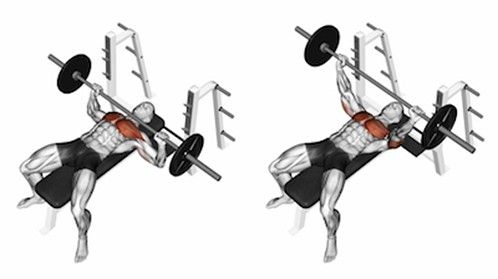

Bench press
Výchozí poloha: Lehněte si zády na vodorovnou lavici. Lopatky držte u sebe a činku uchopte nadhmatem. Držte rovné zápěstí a lokty přímo pod osou. Šíře úchopu je o něco větší než šířka vašich ramen. Chodidla jsou celou plochou položena na zemi a kolena svírají úhel přibližně 90 stupňů. V průběhu cviku je možné lehké prohnutí v zádech. Ramena a hýždě zůstávají celou plochou na podložce. Střed těla a hýžďové svaly jsou během cvičení aktivní.
Provedení: Zvedněte činku do výchozí polohy nad hrudník. Poté ji s nádechem pomalu spouštějte na hrudník. Ve spodní fázi se osa lehce dotkne hrudi, zhruba ve středu hrudní kosti. V této fázi paže s tělem svírají úhel 45–60 stupňů. Potom s výdechem pomocí kontrakce prsních svalů zatlačte do činky směrem vzhůru až do té výšky, kdy máte téměř narovnané lokty. Dráha osy ve směru nahoru by měla opisovat lehký oblouk. Po návratu do výchozí polohy navažte dalším opakováním.
Rozpažování s jednoručkami
Výchozí poloha: Lehněte si na vodorovnou lavici na záda. Nohy se opírají celou plochou chodidel o podložku. Uchopte jednoručky, předpažte a dlaně vytočte směrem k sobě. Lokty mírně pokrčte. Aktivujte střed těla.
Provedení: S nádechem plynulým pohybem pomalu přejděte do rozpažení. Lokty se snažte stále držet v mírném pokrčení. S výdechem pomocí kontrakce prsních svalů vraťte paže do výchozí polohy. Poté navažte dalším opakováním.
Rozpažování (střihy) na horních kladkách
Výchozí poloha: Uchopte do každé ruky držadlo protisměrné horní kladky nadhmatem. Postavte se do středu mezi kladkostroje, jednou nohou předkročte a lehce pokrčte obě kolena. Mírně se předkloňte a záda držte v přirozeném zakřivení. Paže jsou v upažení, lokty lehce pokrčené a směřují vzhůru.
Provedení: S výdechem pomocí kontrakce prsních svalů stáhněte držadla kladek k sobě. Pohyb je veden směrem dolů a vpřed. Ruce s držadly se ve spodní pozici setkají před tělem. Zde může následovat 1–2sekundová výdrž. Poté se s nádechem vraťte do výchozí polohy a pokračujte s dalším opakováním.
Dipy na bradlech
Výchozí poloha: Udělejte vzpor na bradlech, paže jsou napnuté v loktech. Nohy můžete mírně pokrčit, lokty směřují ven. Záda zůstávají v přirozeném zakřivení.
Provedení: S nádechem pokrčte lokty a kontrolovaně se spouštějte směrem dolů až do polohy, kdy dostanete ramena do úrovně pod lokty. S výdechem pomocí aktivace svalů prsou a paží se vraťte do výchozí polohy. Poté navažte dalším opakováním.

Pullover s jednoručkou
Výchozí poloha: Položte horní část zad z boku na vodorovnou lavici. Nohy se opírají celou plochou chodidel o podložku a jsou pokrčené v kolenou. Vzpažte a uchopte jednoručku za horní část (za kotouč/hexagon). Paže jsou mírně pokrčené v lokti. Aktivujte svaly středu těla i hýždí.
Provedení: S výdechem pomocí kontrakce svalů paží a hrudníku předpažte. S nádechem se vraťte do výchozí polohy a navažte dalším opakováním.

.